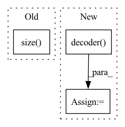

Pattern ID :36834

Before Change
// forward decoder
h_masks = None
zs, _ = self.decoder(encoded_texts, h_masks, utterance_embedding) // (B, Lmax, adim)
before_outs = self.feat_out(zs).view(zs.size(0), -1, self.odim) // (B, Lmax, odim)
// postnet -> (B, Lmax//r * r, odim)
after_outs = before_outs + self.postnet(before_outs.transpose(1, 2)).transpose(1, 2)
After Change
z = self.decoder(cond=encoded_texts.transpose(1, 2), infer=True)
encoded_texts = cut_to_multiple_of_n(encoded_texts)
before_outs = self.decoder.decoder(z, nonpadding=None, cond=encoded_texts.transpose(1, 2).detach()).transpose(1, 2)
// forward flow post-net
if self.glow_enabled:
after_outs = self.run_post_glow(tgt_mels=None,
infer=True,
mel_out=before_outs,
encoded_texts=encoded_texts,
tgt_nonpadding=None)
else:
after_outs = before_outs
return before_outs, after_outs, duration_predictions, pitch_predictions, energy_predictions
In pattern: SUPERPATTERN
Frequency: 3
Non-data size: 3
Instances
Fragment ID: 104983138
Project Name: digitalphonetics/ims-toucan
Commit Name: f8b81e9711f5d31078b3193604da9ac3d6340ec6
Time: 2022-12-02
Author: florian.lux@ims.uni-stuttgart.de
File Name: InferenceInterfaces/InferenceArchitectures/InferencePortaSpeech.py
M Class Name: PortaSpeech
N Class Name: PortaSpeech
M Method Name: _forward(12)
N Method Name: _forward(12)
M Parent Class: torch.nn.Module
N Parent Class: torch.nn.Module
M File Name: InferenceInterfaces/InferenceArchitectures/InferencePortaSpeech.py
N File Name: InferenceInterfaces/InferenceArchitectures/InferencePortaSpeech.py
M Start Line: 161
M End Line: 215
N Start Line: 210
N End Line: 228
'>
Before Change
// nonpadding: [B, 1, T]
// cond: [B, C_g, T]
zs, _ = self.decoder(x=encoded_texts.transpose(1, 2), nonpadding=text_lens, cond=utterance_embedding, infer=False, noise_scale=1.0) // (B, Lmax, adim)
before_outs = self.feat_out(zs).view(zs.size(0), -1, self.odim) // (B, Lmax, odim)
// postnet -> (B, Lmax//r * r, odim)
after_outs = before_outs + self.post_flow(before_outs.transpose(1, 2)).transpose(1, 2)
After Change
z = self.decoder(cond=encoded_texts.transpose(1, 2),
infer=is_inference) // (B, Lmax, adim)
else:
z, kl_loss, z_p, m_q, logs_q = self.decoder(x=gold_speech,
nonpadding=target_non_padding_mask,
cond=encoded_texts.transpose(1, 2),
infer=is_inference) // (B, Lmax, adim)
if not use_posterior:
z = torch.randn_like(z)
'>
Fragment ID: 104983131
Project Name: digitalphonetics/ims-toucan
Commit Name: 1f6ef3294b6593510f03bf07885afb4754888c42
Time: 2022-11-29
Author: florian.lux@ims.uni-stuttgart.de
File Name: TrainingInterfaces/Text_to_Spectrogram/PortaSpeech/PortaSpeech.py
M Class Name: PortaSpeech
N Class Name: PortaSpeech
M Method Name: _forward(14)
N Method Name: _forward(12)
M Parent Class: torch.nn.Module,ABC
N Parent Class: torch.nn.Module,ABC
M File Name: TrainingInterfaces/Text_to_Spectrogram/PortaSpeech/PortaSpeech.py
N File Name: TrainingInterfaces/Text_to_Spectrogram/PortaSpeech/PortaSpeech.py
M Start Line: 303
M End Line: 309
N Start Line: 258
N End Line: 330
'>
Before Change
enc_output = self.encode(inputs, i_mask)
t_mask = utils.create_pad_mask(targets, self.trg_pad_idx)
target_size = targets.size()[1]
t_self_mask = utils.create_trg_self_mask(target_size,
device=targets.device)
return self.decode(targets, enc_output, i_mask, t_self_mask, t_mask)
After Change
padded_input = padded_input.transpose(1, 2).contiguous() // BxTxH
encoder_padded_outputs, _ = self.encoder(padded_input, input_lengths)
pred, gold, *_ = self.decoder(padded_target, encoder_padded_outputs, input_lengths)
hyp_best_scores, hyp_best_ids = torch.topk(pred, 1, dim=2)
hyp_seq = hyp_best_ids.squeeze(2)
gold_seq = gold
'>
Fragment ID: 104983133
Project Name: qute012/kosr
Commit Name: b7d24b0d835254fd425224eba3421a3b7224e55f
Time: 2021-01-12
Author: ejrwls012@gmail.com
File Name: model/transformer/transformer.py
M Class Name: Transformer
N Class Name: Transformer
M Method Name: forward(4)
N Method Name: forward(3)
M Parent Class: nn.Module
N Parent Class: nn.Module
M File Name: model/transformer/transformer.py
N File Name: model/transformer/transformer.py
M Start Line: 19
M End Line: 28
N Start Line: 18
N End Line: 34